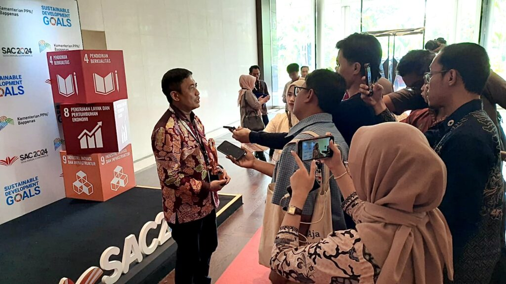
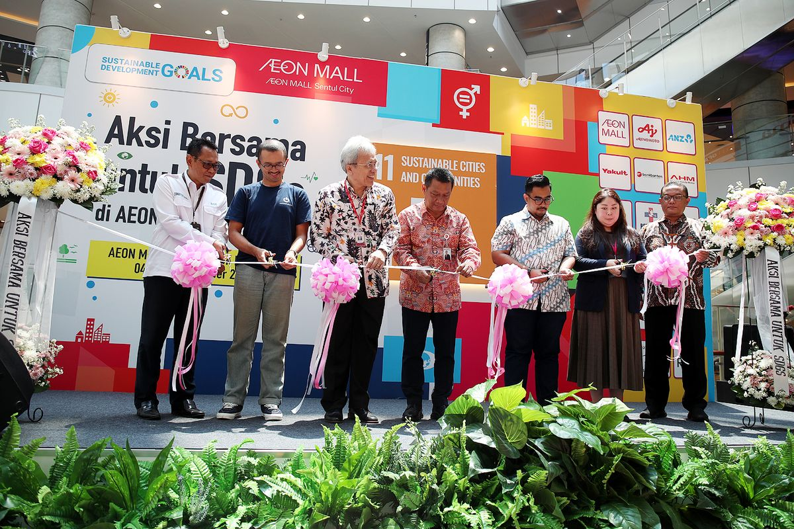
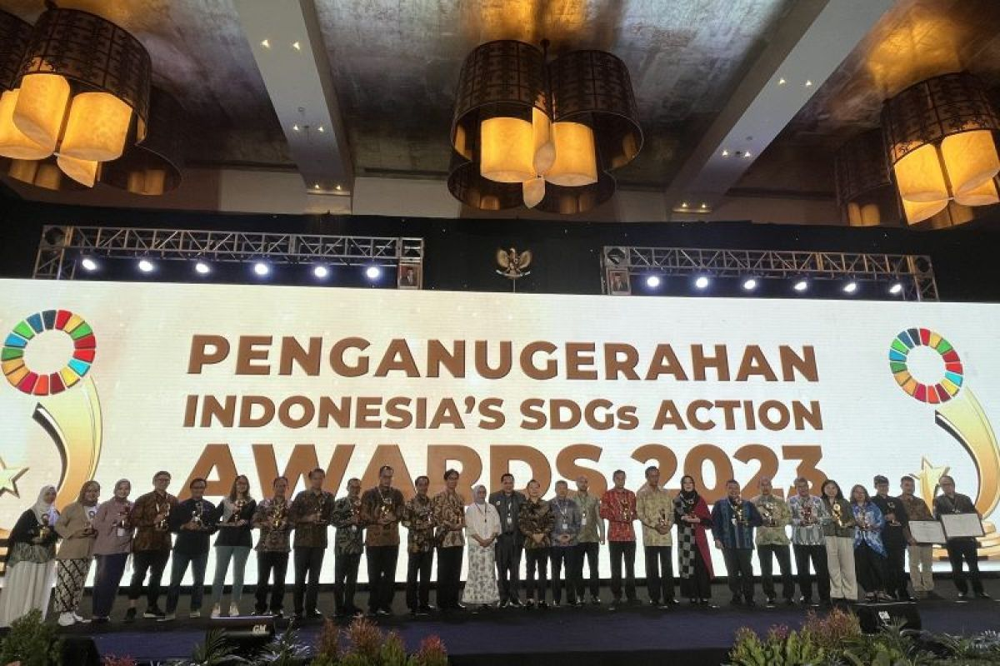
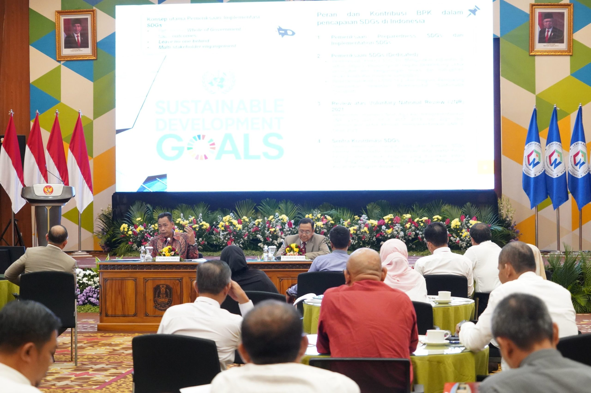
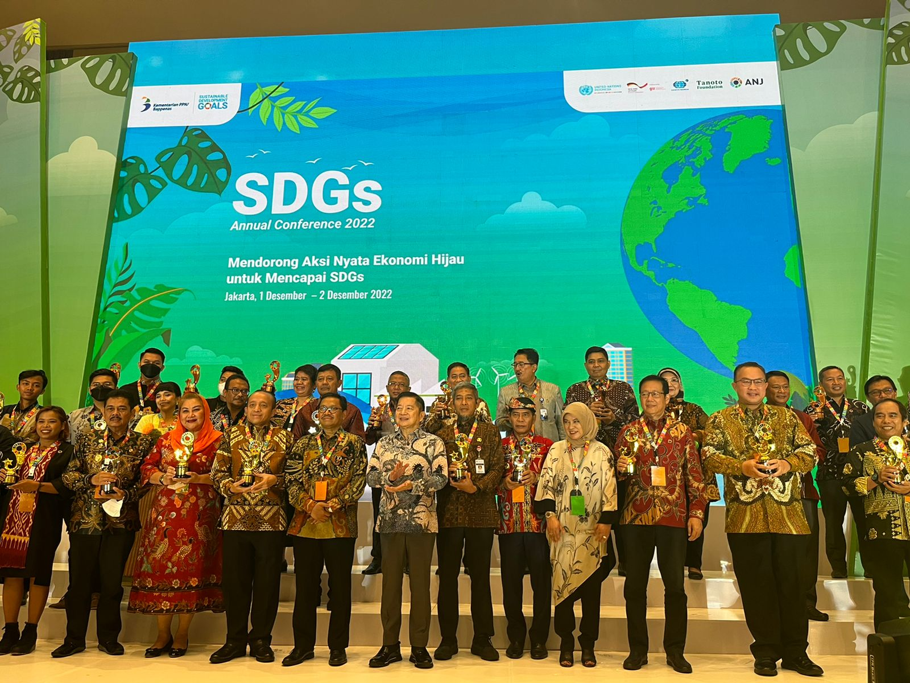

    
Indonesia, merupakan negara yang berkembang yang berada di Asia Tenggara dengan populasi sekitar 270 juta mengikut serta dalam program SDGs ini. Indonesia terlibat dalam banyak hal dari kebijakan, program, dan kolaborasi secara internasional yang memberi dampak besar juga secara domestik maupun global.
1. Sesuai dengan tujuan ke-4 (pendidikan berkualitas), Indonesia menerapkan program wajib belajar bagi para siswa-siswi selama 12 tahun. Tetapi tentu juga ada isu-isu dan yang menjadi masalah utama adalah kesenjangan antara daerah perkotaan dan pedesaan mengenai pendidikan. Oleh karena itu, pendidikan yang berkualitas bisa dibilang terbatas bagi wilayah tersebut. Tetapi pemerintah juga melakukan beberapa upaya seperti pelatihan bagi guru untuk mengembangkan profesionalisme terutama pada wilayah terpencil. Pemerintah juga mengalokasi anggaran untuk memfasilitaskan infrastruktur atau keperluan lain-lain di sektor pendidikan.
2. Sesuai dengan tujuan ke-1 (tanpa kemiskinan), Indonesia sudah menerapkan bantuan sosial untuk mengatasi kemiskinan melalui program-program pemerintah seperti; Program Keluarga Berharapan (PKH) yang bertujuan untuk membantu keluarga miskin melalui memberi akses layanan kesehatan, pendidikan bagi anak-anaknya, dan mengurangi beban keluarga. Juga melalui pembangunan infrastruktur di daerah-daerah terpencil yang bertujuan untuk mengakses layanan yang penting bagi kehidupan seperti pendidikan dan kesehatan.
1. Sesuai dengan tujuan ke-4 (pendidikan berkualitas), dampak yang bisa didapatkan seperti kualitas sumber daya manusia yang meningkat melalui kemampuan untuk berpikir lebih kritis, akses ke layanan pendidikan yang lebih mudah diakses dan lebih nyaman & aman untuk dipergunakan, dan ketimpangan sosial dan ekonomi dalam pendidikan yang berkurang akibat menerima ilmu yang berkualitas yang sudah diterima oleh banyak warga.
2. Sesuai dengan tujuan ke-1 (tanpa kemiskinan), dengan program-program yang sudah terlaksana, dapat memberi dampak positif seperti kualitas hidup masyarakat yang meningkat dengan bantuan-bantuan sosial yang sudah difasilitaskan, pengurangan pengangguran dengan banyak masyarakat yang sudah difasilitaskan kebutuhan yang diperlukan untuk menempuh dunia kerja, dan akses terhadap layanan dasar yang meningkat melalui pembangunan infrastruktur yang sudah membaik di daerah terpencil yang memberi mereka akses ke pendidikan, kesehatan, dan dunia kerja.